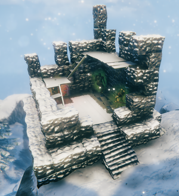
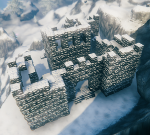

山地塔楼
本站支持中英文站内搜索。带 ↗ 的链接指向外部网站；各页来源版本见页脚。

StoneTowerRuins05
StoneTowerRuins05_leet
主要由石头建成的大型废墟，共两种变体。
塔盾


塔楼变体是独立方形石建筑，部分结构可能缺失。
有63%概率包含导向符文石，揭示最近冰幼龙母的祭坛。第一层有59.4%概率出现雪山宝箱，可能含贵重物品和洋葱种子。塔顶另有18.1%概率出现第二个雪山宝箱，由0至2只骷髅怪保护。
有33%概率一次性生成3只尸鬼保护塔楼。
堡垒


堡垒也称尸鬼堡垒，是大型石结构，中央塔外有更大围墙及四座角塔。部分乃至全部墙塔可能随机缺失。
中央塔出现概率50%，若有则必含雪山宝箱，另有50%概率带邪骨堆。
堡垒没有指引石。
图片库
- 完整塔楼示例。

StoneTowerRuins05
StoneTowerRuins05_leet
Mountain Towers are a Point of interest found in the Mountain.
They are large ruined structures made mostly of Stone. They come in two variants.
Tower
The tower variant is a single, square stone building. Some parts of the stone tower may be missing.
They have a 63% chance of containing a Vegvisir, which reveals the location of Moder's nearest Forsaken altar. There is a 59.4% chance of a Mountain chest on the first floor, possibly containing valuables and Onion Seeds. There is another 18.1% chance for a second Mountain chest to appear at the top of the tower. This chest is protected by 0 to 2 Skeletons.
A group of 3 Draugr protecting the tower has a 33% chance to spawn once.
Fort
The fort, also referred to as Draugr fort, is a large stone structure with a central tower surrounded by a larger wall and four corner towers. Some or all of the walls and towers may be randomly missing.
The central tower has 50% chance to appear, if it does, it always has a Mountains chest. It also has a 50% to appear with an Evil Bone Pile.
Notably, forts do not have Vegvisir.
Gallery
-
Example of complete tower.